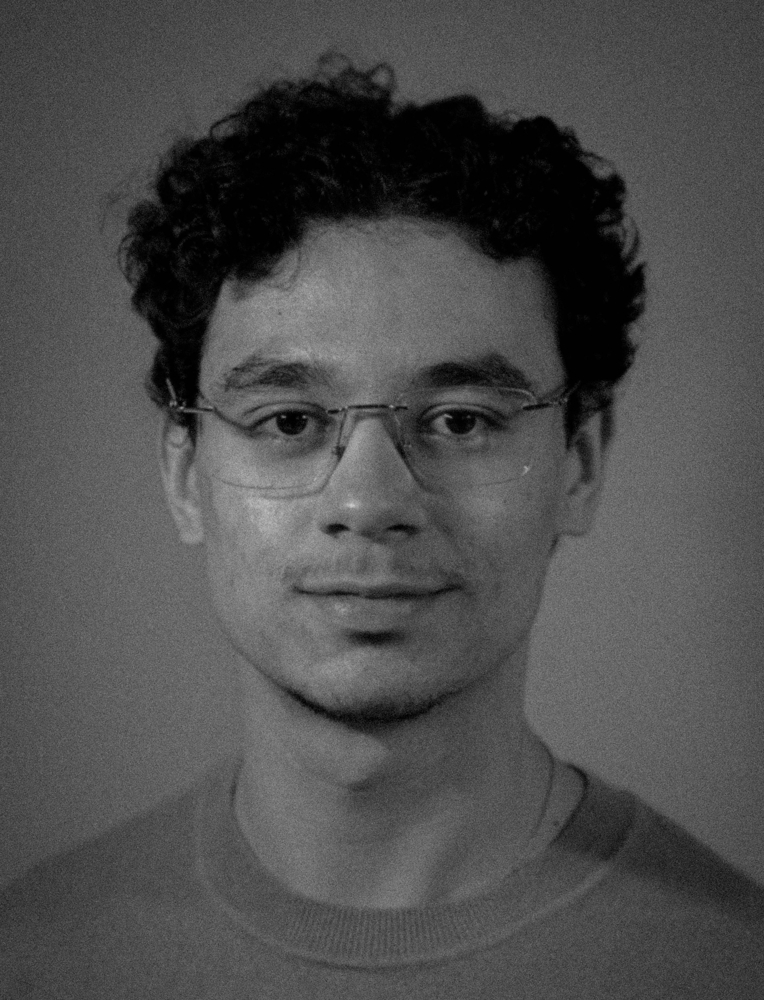

my name is tareq derdaki.
i was born and raised in
valenciennes, north, france, but i moved away to attend the
utc – university of technology of compiègne
in 2021 after graduating from high school.
as someone with a deep passion for computer science, mathematics, and
problem-solving, i focused my studies on data science and artificial
intelligence (machine learning is my guilty pleasure, by the way).
outside of school and work, my two biggest passions are photography
(check out
my art
section) and sports (both team sports and outdoor activities).
you can also take a look at my current plans here.

february 19, 2026